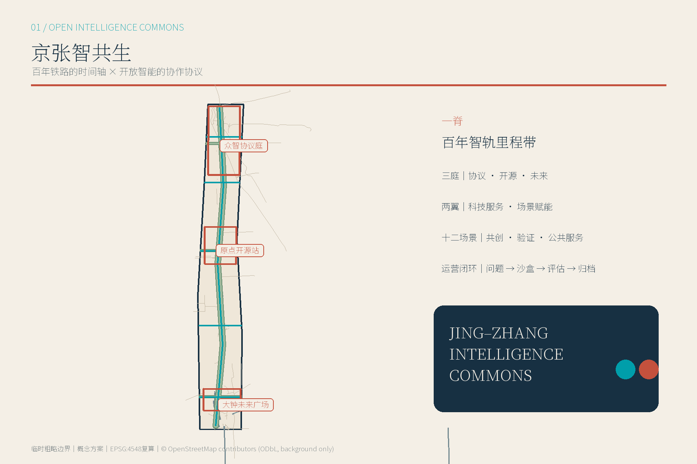
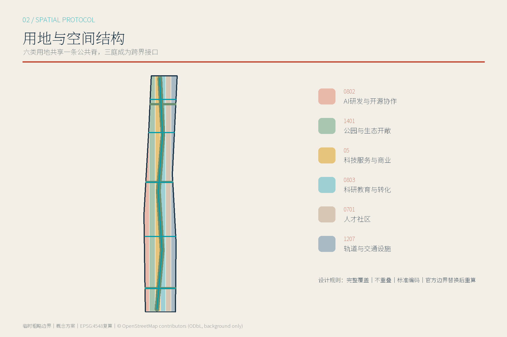
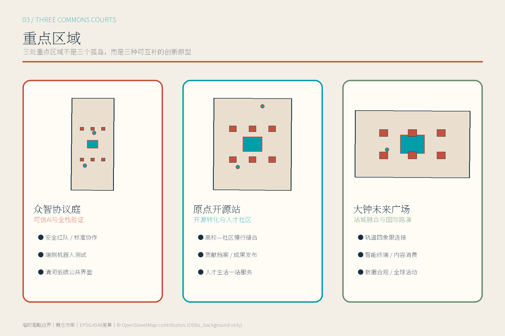
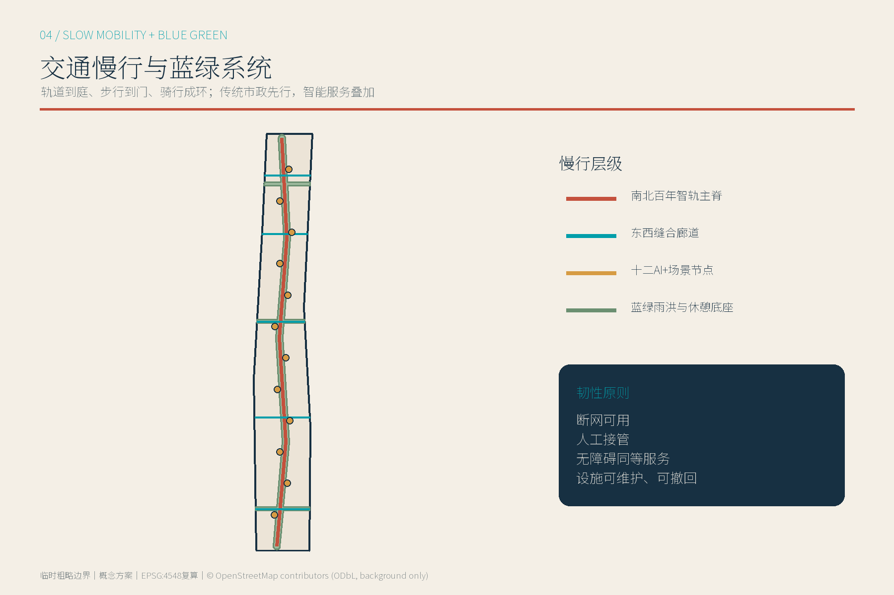
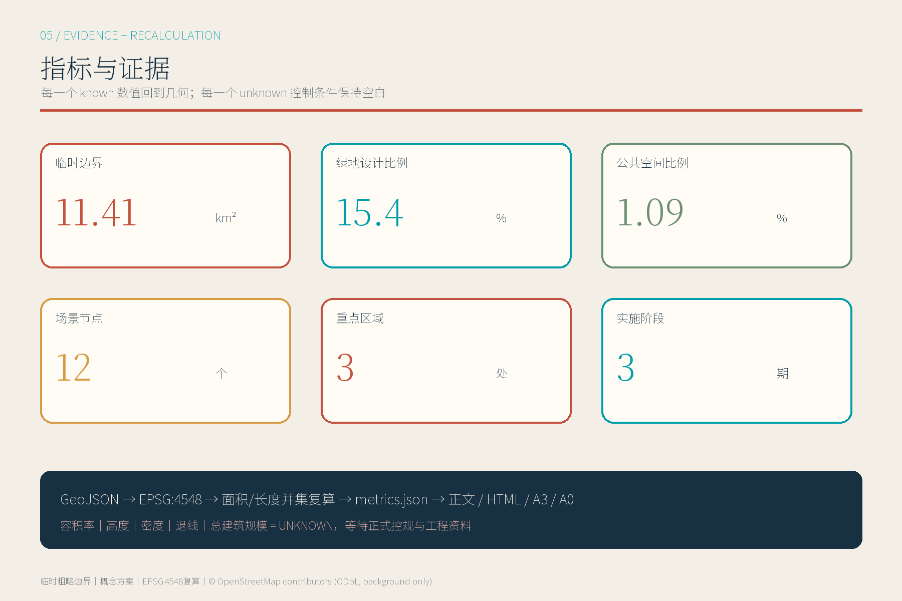

资料边界：总体范围与三处重点区均为临时粗略边界；OSM仅作背景。页面完全离线，不加载远程脚本、地图、字体或追踪器。
总览地图 · 三层范围 · 重点区域

用地分区 · 建筑 · 更新项目


交通慢行 · 蓝绿公共空间

AI 场景
核心指标
11.41km² 临时边界
15.4%设计绿地比例
1.09%公共空间比例

任务覆盖 · 自检状态
公告 1.3 / 1.4 / 1.5 与 agent.1—agent.6 已映射到章节、图层、指标、图纸和来源。
空间拓扑、静态HTML、专业证据与AI治理均进入仓库自检。
known 可复算；unknown 保持空白并说明补充资料。
来源 · 假设
主依据：北京官方公告、仓库任务书与专业标准。背景研究：MIT、Mila、Vector、AI Singapore、Seoul AI Hub、ETH AI Center。地图背景：© OpenStreetMap contributors / ODbL。关键假设：临时边界待官方整体替换；控规、权属、市政、消防、防洪和文保条件待专业确认。